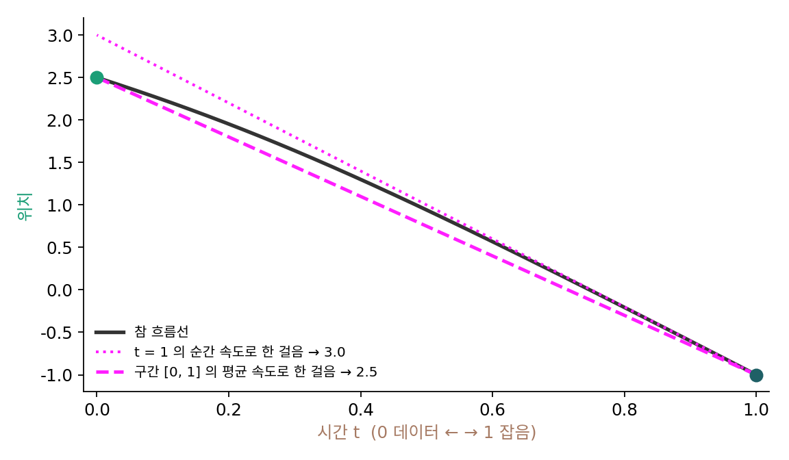

평균 속도: 순간의 빠르기 대신 구간의 이동표
리플로우는 길을 펴지만, 먼저 한 모델을 배우고 그 모델로 짝을 잔뜩 만든 뒤 다시 배워야 하고, 처음 모델의 실수를 물려받는다. 한 걸음 생성이 목표라면 처음부터 「잡음에서 데이터까지 한 번에 얼마나 가는지」를 배울 수는 없을까? 수첩에 「이 시각 이 자리에서는 이 빠르기로」 대신 「이 시각 이 자리에서 출발하면 저 시각에는 어디에 있다」를 적어 두면, 중간을 걷지 않고도 저 시각의 자리로 바로 간다. 드래곤볼 세계로 말하면 순간이동이다.
순간 속도와 평균 속도
다시 데이터 N(3, 0.5²)의 흐름으로 보자. 흐름선을 식으로 아니, 시간 r부터 t까지 실제로 옮긴 거리를 걸린 시간으로 나눈 값을 바로 계산할 수 있다.
잡음 쪽 끝의 자리 −1에서 출발한 점은 2.5에 닿으므로 구간 [0, 1]의 평균 속도는 (−1 − 2.5)/1 = −3.5다. 그 자리의 순간 속도는 −4였다. 순간 속도로 한 걸음 가면 −1 + 4 = 3.0에 떨어지고, 평균 속도로 가면 −1 + 3.5 = 2.5에 정확히 닿는다. 잡음 쪽 끝의 순간 속도는 어느 점에서나 「데이터 평균 3으로 곧장」이므로, 순간 속도로 한 걸음 가면 모든 점이 3에 모인다. 자리 1.2에서 출발한 점도 순간 속도로는 3.0에, 평균 속도로는 제자리 3.6에 닿는다.

평균 속도를 신경망에게 배우게 하려면 타깃이 있어야 한다. 정의대로라면 흐름선을 따라 적분해야 하니, 리플로우처럼 흐름을 먼저 돌려야 할 것 같다. 그런데 정의의 양변에 (t − r)을 곱한 (t − r)v̄ = ∫v dτ를 t로 미분하면 적분이 사라진다.
자리 −1의 흐름선, r = 0, t = 0.6에서 확인하면 왼쪽 v̄는 −3.22076, 오른쪽 v − (t − r)dv̄/dt도 −3.22076이다. 오른쪽에는 순간 속도와 신경망 자신의 변화율만 있으므로, 순간 속도 자리에 짝의 속도를 넣으면 흐름을 돌리지 않고도 타깃을 만들 수 있다. 이렇게 구간 [r, t] 동안 흐름이 실제로 옮긴 거리를 걸린 시간으로 나눈 양을 평균 속도 (구간 동안 옮긴 거리 ÷ 걸린 시간 / average velocity)라 하고, 신경망 v̄θ(xt, r, t)가 그것을 맞히게 하는 모델을 MeanFlow라 부른다. 한 걸음 생성은 x₀ = ε − v̄θ(ε, 0, 1)이다. 플로우 매칭의 속도장은 r = t인 특별한 경우(구간이 0인 평균 속도 = 순간 속도)로 그 안에 들어 있다.
역사: 한 걸음 모델은 언제나 여러 걸음 모델의 제자일까
한 걸음 생성기는 대개 여러 걸음으로 잘 배운 선생 모델을 먼저 만들고, 그 결과를 흉내 내도록 배우는 증류로 만들었다. InstaFlow도 리플로우 뒤에 증류를 거쳤다. 2025년 겅정양(Zhengyang Geng), 허카이밍(Kaiming He)과 동료들의 「한 걸음 생성 모델링을 위한 평균 흐름(Mean Flows for One-step Generative Modeling)」은 이 순서를 건너뛰었다. 논문 요약은 평균 속도와 순간 속도를 잇는 항등식으로 신경망을 학습하며, 미리 학습한 모델도 증류도 단계적 학습 계획도 쓰지 않고 ImageNet 256×256에서 처음부터 학습해 신경망 한 번 부르기로 FID 3.43을 얻었다고 적는다. 대가는 학습 쪽으로 옮겨 갔다. 항등식의 dv̄/dt를 계산하려고 학습할 때마다 신경망의 야코비안–벡터 곱(입력을 한 방향으로 조금 움직일 때 출력이 얼마나 바뀌는지를 한 번에 재는 계산)을 구한다.
같은 해 장신시(Xinxi Zhang)와 동료들은 「MeanFlow의 곡률 병목 넘기(Overcoming the Curvature Bottleneck in MeanFlow)」에서, 기존 모델의 길이 심하게 휘어 있으면 손실 지형이 거칠어져 학습이 잘 수렴하지 않는다고 보았다. 그래서 미리 학습한 모델로 리플로우 짝을 만들어 곧게 편 흐름 위에서 평균 속도를 배우게 하고(Rectified MeanFlow), 남은 휜 짝은 거리 기준으로 걸러 냈다. 길을 먼저 펴고 이동표를 만드는 것이다. 리플로우와 평균 속도는 따로가 아니라, 표를 만들려면 길이 곧을수록 쉽다는 한 이야기다.
ML에서: 걸음 수를 정하는 일과 이어진다
평균 속도 모델은 같은 신경망으로 걸음 수를 고를 수 있다. 한 걸음이면 v̄θ(ε, 0, 1)을 한 번, 두 걸음이면 [0.5, 1]과 [0, 0.5]의 평균 속도를 한 번씩 부른다. 순간 속도로 걷는 모델이 몇 걸음에 어떻게 걸을지는 이 장이 정하지 않은 문제다. 같은 길을 정해진 신경망 호출 횟수 안에서 얼마나 잘 따라가느냐가 샘플러를 고르는 일이다.
문제 12. 서울에서 부산까지
서울에서 부산까지 400 km를 가는데 내비가 출발할 때 「4시간」이라고 했다. (가) 4시간 동안의 평균 빠르기는? (나) 처음 30분은 시내라 시속 60 km로만 갔다. 남은 시간 안에 닿으려면 남은 구간의 평균 빠르기는 얼마여야 하는가? (다) 출발할 때의 빠르기 시속 60 km로 4시간을 그대로 달리면 어디쯤인가?

(가)는 시속 100 km예요. (다)는 그래도 처음에 내비가 길을 잘 봐 줬으니 부산 근처쯤 가 있겠죠.

계산해 볼까요?

60 × 4 = 240 km요. 부산까지 160 km나 남았어요. 출발할 때의 빠르기는 시내 구간의 빠르기일 뿐이었네요.

(나)는 30분에 30 km를 갔으니 남은 370 km를 3.5시간에 가야 해서 시속 105.7 km야. 순간의 빠르기는 구간마다 바뀌지만, 「출발 시각과 도착 시각만 알면 되는 사람」에게는 구간의 평균 빠르기 하나로 충분해.
내비가 「4시간」이라고 한 것도 순간 빠르기가 아니라 구간 전체의 이동표예요.
학기 초 성적으로 학기 말 성적을 짐작하면 빗나가지만, 「학기 평균」만 알면 졸업 학점은 바로 계산되는 거랑 같네요.
문제 13. 평균 속도의 항등식
시간 τ에 자리가 x(τ) = τ²인 점이 있다(이 문제만의 장난감 길). (가) 구간 [r, t] = [0.2, 0.8]의 평균 속도 v̄와 t = 0.8의 순간 속도 v를 구하라. (나) 항등식 v̄ = v − (t − r)dv̄/dt가 성립하는지 확인하라.
(가)는 (0.64 − 0.04)/0.6 = 1.0, 일반적으로 (t² − r²)/(t − r) = r + t예요. 순간 속도는 2t = 1.6이고요. (나)는 평균 속도는 구간 전체로 이미 정해진 값이니까 dv̄/dt = 0, 그러면 오른쪽이 1.6이라 왼쪽 1.0과 안 맞아요. 항등식이 틀린 거 아닐까요?

「이미 정해진 값」이라는 건 구간의 끝을 고정했을 때 이야기죠. 항등식의 d/dt는 무엇을 움직이는 미분이에요?
끝 시각 t를 움직여요. 구간이 늘어나면 평균도 바뀌죠. v̄ = r + t를 t로 미분하면 1이에요. 오른쪽은 1.6 − 0.6 × 1 = 1.0. 맞아요.
정의 (t − r)v̄ = x(t) − x(r)를 t로 미분하면 곱의 미분으로 v̄ + (t − r)dv̄/dt = v(t)가 바로 나오네요. 항등식은 이 줄을 옮겨 적은 거였어요.
그래요. 실제 모델에서는 t가 움직이면 자리 xt도 흐름을 따라 함께 움직이니, 그 미분에 「자리가 움직여서 생기는 변화」까지 들어가요. 그걸 한 번에 재는 게 야코비안–벡터 곱이에요.
미적분 수업에서 평균값 정리를 배울 때, 구간의 평균 기울기는 끝점을 옮기면 같이 변한다는 걸 따로 계산해 본 적이 있어요. 그때 그 식이네요.
문제 14. 한 걸음과 두 걸음
데이터 N(3, 0.5²)의 흐름에서 잡음 쪽 끝의 자리 1.2에서 출발한다. 평균 속도를 정확히 아는 모델로 (가) 한 걸음(구간 [0, 1]) 가면 어디에 닿는가? (나) 두 걸음(구간 [0.5, 1], 다음에 [0, 0.5]) 가면 중간과 끝은 어디인가? (다) 순간 속도로 오일러 방법을 1, 2, 50걸음으로 걸으면?
정확한 평균 속도면 한 걸음에 흐름선의 끝, 3 + 0.5 × 1.2 = 3.6이에요. 두 걸음이면 한 걸음씩 끊어 가니까 오차가 생기겠고, 오일러처럼 걸음이 많을수록 3.6에 다가가겠죠.
두 걸음의 중간을 계산해 봐요. 평균 속도 [0.5, 1]로 0.5만큼 가면요?

중간은 흐름선의 t = 0.5 자리 2.1708이에요. 거기서 [0, 0.5]의 평균 속도로 가면 다시 3.6이고요. 한 걸음이든 두 걸음이든 똑같네요. 정확한 이동표는 끊어서 써도 같은 곳에 닿아요.
오일러는 1걸음 3.0, 2걸음 3.24, 50걸음 3.5825야. 걸음을 늘려야 3.6에 다가가.
그럼 학습한 평균 속도 모델이 한 걸음과 두 걸음에서 다른 답을 낸다면, 그건 무엇을 말해 줄까요?

이동표가 어딘가 틀렸다는 뜻이에요. 정확하면 끊어 써도 같아야 하니까, 두 결과의 차이가 그 모델이 평균 속도를 얼마나 잘못 배웠는지의 단서예요.
시간표에 서울–대전, 대전–부산을 따로 적었는데 둘을 더한 게 서울–부산 칸이랑 다르면 어느 칸이 틀린 거잖아요. 그거랑 같네요.